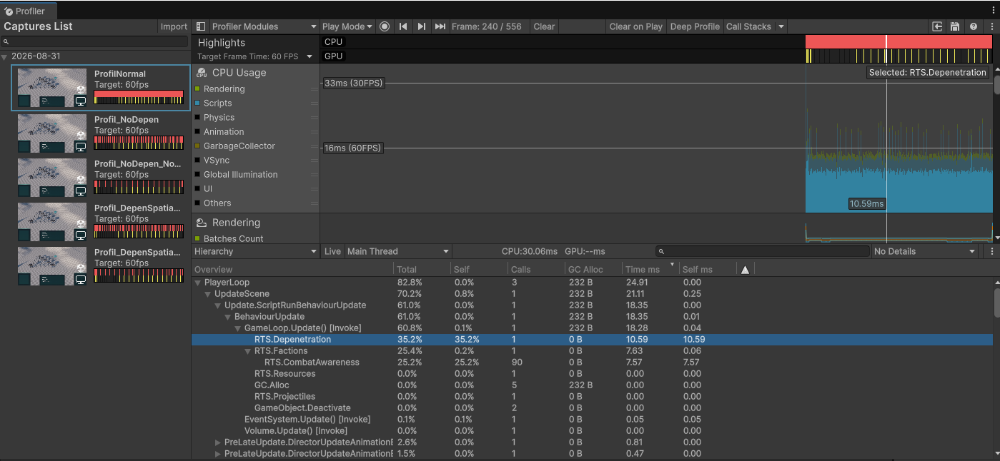
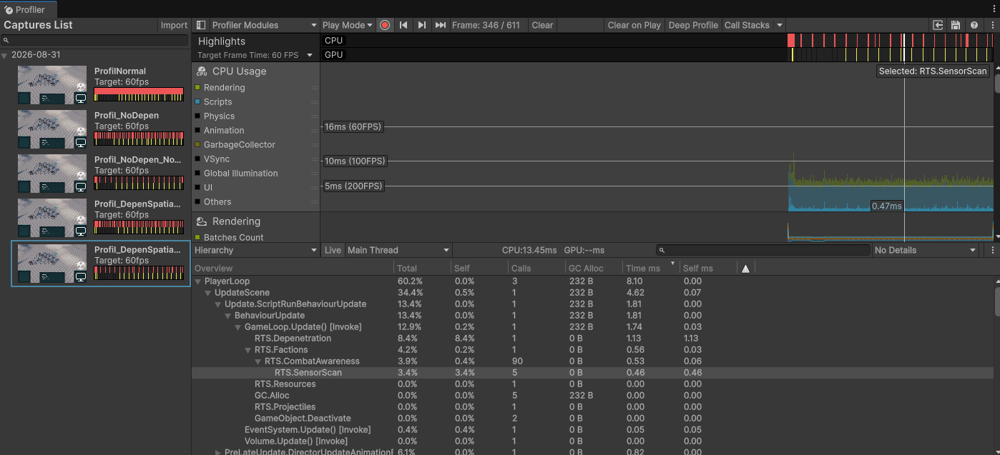
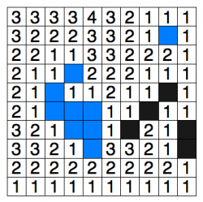

From N × A*
to Shared Navigation
Scaling Group Movement in Protocol Exodus
Moving one unit through a map is a pathfinding problem. Moving fifty units through the same map is not simply the same problem fifty times.
During the development of Protocol Exodus, the navigation system progressively grew from classical per-unit A* into a larger stack involving destination allocation, path following, local steering, static obstacle clearance, unit depenetration, formation topology, and tactical position reservation.
Each subsystem solved a real problem. Together, however, they exposed a more fundamental scalability issue: a group of units executing the same command was still asking the global pathfinder essentially the same expensive question once per unit. The final system uses Flow Fields for large groups while retaining individual A* where it remains cheaper. The architecture separates problems that are easy to conflate.
Global navigation decides where the group should travel. Local movement decides how individual units move through nearby traffic. Formation policy decides where each unit ultimately belongs.
1. The Navigation Stack
Before discussing Flow Fields, it is useful to establish what navigation means inside an RTS. A pathfinding algorithm alone does not move a unit.
By this stage of Protocol Exodus, a Move command passed through several cooperating systems:

1.1 Global Path, Local Motion
The global navigation layer produces a preferred direction. Local Steering is allowed to modify that direction, but it should not replace the global navigation decision entirely.
Vector3 pathDirection = preferredVelocity.normalized;
Vector3 separation = CalculateSeparation(pathDirection);
Vector3 desiredDirection = pathDirection + separation * separationWeight;
Vector3 limitedDirection =
Vector3.RotateTowards(
pathDirection,
desiredDirection,
maxSteeringAngle * Mathf.Deg2Rad,
0f);
The path remains authoritative. Steering only bends it. If a nearby unit produces an avoidance vector \(\mathbf a\), I remove the component parallel to the navigation direction \(\mathbf d\):
\[ \mathbf a_{\perp} = \mathbf a- \operatorname{proj}_{\mathbf d}(\mathbf a) \]For normalized \(\mathbf d\):
The separation distance depends on both navigation radii:
\[ D_{\text{sep}}=r_A+r_B+p \]and the force increases as units approach:
\[ S(d)=1-\frac{d}{D_{\text{sep}}}. \]1.2 Depenetration Is a Different Problem
Steering is preventative. Depenetration is corrective.
If two units still overlap because of dense traffic, numerical error, or conflicting movement, a small positional solver separates them after movement. This is intentionally not a full physics simulation; a few bounded correction passes are enough for this movement layer.
- Steering tries to prevent overlap.
- Depenetration resolves overlap.
- Neither decides the global route.
As unit counts increased, local neighborhood queries were also moved toward spatial buckets rather than brute-force all-pairs checks.
Do expensive spatial work once, then make repeated queries cheap.


2. The Scaling Problem: \(N\) Units, \(N\) x A*
This is the architectural experiment we are actually measuring.
In the original architecture:
\[ T(N,D) \approx N \times A^*(D) \]where \(N\) is the number of units in the group and \(D\) represents the scale of the long-range navigation problem. Both group size \(N\) and travel distance \(D\) therefore amplify the command spike.
The first shared-navigation architecture moves the expensive long-range search to the group level:
\[ T(N,D) \approx A^*_{\text{shared}}(D) + N \times A^*_{\text{assembly}}(\text{short}) + N \times Steering \]The group now pays for the long-range route once, while units can still perform short assembly searches and their usual per-unit steering work.
The eventual target removes the per-unit assembly pathfinding as well. Units directly sample the shared navigation solution:
\[ T(N,D) \approx A^*_{\text{shared}}(D) + N \times O(1)\text{ route sampling} + N \times Steering \]A Flow Field backend later changes only the global-navigation side of this model. The architectural decomposition remains the same: one shared global navigation solution, consumed by \(N\) units through cheap local sampling and per-unit steering.
\[ T(N,G) \approx FlowField(G) + N \times O(1)\text{ direction sampling} + N \times Steering \]where \(G\) represents the navigable grid over which the integration field is computed. The global cost is now the construction of a single shared Flow Field, while the per-unit cost remains a constant-time direction sample followed by local steering.
4. Flow Fields: Making Navigation Spatial
The representation changed from:
\[ P\rightarrow\text{nearest route segment}\rightarrow\text{route tangent} \]to simply:
A Flow Field stores navigation information over the traversable grid. Every unit
in the MovementGroup samples the same field from its own world
position.
public NavigationSample SampleDirection(Vector3 worldPosition)
{
GridCoord currentCell = field.Grid.WorldToCell(worldPosition);
if (!field.IsInside(currentCell) || !field.IsReachable(currentCell))
{
return NavigationSample.Invalid;
}
Vector3 direction =
SampleSmoothedDirection(
worldPosition,
currentCell);
// ...
}4.1 Radius-Aware Traversability
A narrow passage that is valid for an infantry unit may not be valid for a larger Mecha. One group-shared field therefore uses a conservative radius:
If the largest member fits, every smaller member can safely consume the same global field.
4.2 Multi-Source Dijkstra Integration
The Flow Field begins with an integration field: the cost-to-go from every reachable cell toward the destination.
\[ C(g)=0 \qquad C(x)=\infty\;\text{ initially elsewhere}. \]Dijkstra performs the relaxation:
\[ C(v)\leftarrow \min\left(C(v),C(u)+w(u,v)\right). \]For the eight-connected grid, orthogonal movement uses cost \(10\) and diagonal movement uses \(14\), approximating \(\sqrt2\). Diagonal expansion also checks the adjacent orthogonal cells, preventing corner cutting.
4.3 The Destination Should Not Be One Cell
A point goal was algorithmically correct but visually poor for an RTS group: every vector eventually converged toward the same microscopic location.
A large group has an assembly region, not a point-sized destination. After an initial circular experiment, the goal was changed to a rectangular region derived from the formation half-extents.
Every valid goal cell is inserted into the initial Dijkstra frontier, making the integration pass a multi-source shortest-path computation.
4.4 Clearance as a Cost, Not Only a Constraint
Binary traversability answers whether a unit can physically fit. Two legal routes are not necessarily equally desirable.
Define spare clearance:
\[ s(x)=R_{\text{clear}}(x)-r_{\text{field}}. \]A finite discomfort penalty is:
\[ P_{\text{clear}}(x) = P_{\max} \left[ 1- \operatorname{clamp} \left( \frac{s(x)}{m},0,1 \right) \right]. \]The relaxation becomes:
Legal clearance is a hard constraint. Comfortable clearance is a soft cost.

Credits : harablog.wordpress.com/hierarchical-clearance-based-pathfinding
4.5 From Integration Field to Direction Field
Once \(C(x)\) is known, each reachable cell selects the traversable neighbor with the lowest cost toward the goal:
\[ n^*=\arg\min_{n\in N(x)}\left[C(n)+w(x,n)\right]. \]The local direction is:
4.6 Smoothing the Field
Raw grid directions change abruptly at cell boundaries. Some units exhibited high-frequency rotational jitter even with Local Steering disabled, which isolated the field sampling itself as the cause.
For local coordinates \(t_x,t_z\in[0,1]\):
\[ w_{00}=(1-t_x)(1-t_z), \quad w_{10}=t_x(1-t_z), \] \[ w_{01}=(1-t_x)t_z, \quad w_{11}=t_xt_z. \]The blended direction becomes:
float w00 = (1f - tx) * (1f - tz);
float w10 = tx * (1f - tz);
float w01 = (1f - tx) * tz;
float w11 = tx * tz;
Vector3 blended = Vector3.zero;
float totalWeight = 0f;
AddDirectionSample(currentCell, c00, w00, ref blended, ref totalWeight);
AddDirectionSample(currentCell, c10, w10, ref blended, ref totalWeight);
AddDirectionSample(currentCell, c01, w01, ref blended, ref totalWeight);
AddDirectionSample(currentCell, c11, w11, ref blended, ref totalWeight);Invalid or unreachable samples are rejected, and zero vectors inside the goal region are not blended into an approaching sample from outside the goal.
5. Static Clearance, Mixed Radii and Local Movement
Flow Fields made one existing optimization even more important:
StaticClearanceField.
5.1 The Expensive Version of Clearance
A radius-aware navigation system repeatedly asks:
Can a unit of radius \(r\) stand in this cell?
Searching nearby static obstacles every time is acceptable occasionally, but not when the same query appears inside A*, Flow Fields, formation allocation, attack-position allocation, and static movement safety.
5.2 Precompute Distance to Static Geometry
Instead, each grid location stores the distance to the nearest static obstruction:
\[ R_{\text{clear}}(x)= \min_{b\in B}\|x-b\|. \]The current field is produced using a separable Euclidean distance transform on a higher-resolution lattice. Once cached, a radius-aware query becomes:
Static buildings and terrain contribute to this field. Dynamic units do not:
\[ \text{static geometry}\neq\text{dynamic traffic}. \]5.3 Mixed Infantry and Mecha
A representative infantry radius is approximately:
\[ r_{\text{infantry}}\approx0.45, \]while the larger Mecha uses approximately:
\[ r_{\text{mecha}}\approx1.5. \]The same map therefore represents different traversable spaces depending on the requesting radius. A group-shared field uses the largest member conservatively, while local separation still uses the radii of the actual pair of units.
6. Navigation Is Not Formation Policy
A Flow Field should not be responsible for preserving an exact rigid formation. Its job is to get the group through the world. Formation policy is a separate layer.
6.1 Building a Roughly Square Formation
For \(U\) units, the allocator chooses:
\[ c=\left\lceil\sqrt U\right\rceil \]columns and:
\[ r=\left\lceil\frac{U}{c}\right\rceil \]rows.
The spacing must account for the largest member:
\[ s_{\text{world}}\ge2r_{\max}. \]Converted into grid cells:
\[ s_{\text{cell}}= \left\lceil \frac{2r_{\max}}{\text{cellSize}} \right\rceil. \]Each final destination is then protected through the destination reservation system.
6.2 Why Nearest-Slot Assignment Is Not Enough
After the group deforms around an obstacle, assigning each unit to the nearest final slot can produce crossings and invert the original spatial order.
Instead, normalize the current topology around the group center:
\[ \hat P_i= \left( \frac{x_i-x_G}{e_x}, \frac{z_i-z_G}{e_z} \right), \]and normalize the destination slot topology:
\[ \hat S_j= \left( \frac{x_j-x_F}{f_x}, \frac{z_j-z_F}{f_z} \right). \]Then minimize the topology error:
The assignment tends to preserve left versus right, front versus rear, and the overall ordering of the group.
6.3 Final Assignment from Post-Obstacle Topology
The original assignment is computed before travel. But after moving around a building, the actual group ordering may be substantially different. Near the destination, final assignment can use the current post-obstacle topology instead.
6.4 AttackPositionAllocator: Topology Applied to Combat
The same idea applies to combat deployment. A unit's angular approach direction and radial depth provide a preferred region around the target, reducing unnecessary crossing between attackers.
Candidate positions can be scored as:
\[ C= w_a C_{\text{angular}} +w_r C_{\text{radial}} +w_t C_{\text{travel}}. \]Cheap rejection happens first:
- radial range,
- angular compatibility,
- cached static clearance,
- destination reservation only for useful candidates.
7. Making the Flow Field Actually Fast
With the Flow Field working correctly, the next pass focused on reducing its construction cost without changing the underlying algorithm.
The first improvement was in traversability, where cached static-clearance data could be reused more directly instead of repeatedly reconstructing information already available in the grid.
The larger gain came from the Dijkstra integration field. Rather than changing Dijkstra itself, the implementation became more index-oriented. A 2D grid coordinate can be flattened into a single array index:
\[ index = y \times width + x \]
This allowed the Flow Field to rely more heavily on contiguous arrays and direct index access, reducing coordinate conversion, queue payload size, and scattered memory access.
Once integration became cheaper, direction generation emerged as the next significant cost. Applying the same index-oriented representation there produced an even larger reduction.
| Phase | Earlier | Now | Improvement |
|---|---|---|---|
| Traversability | ~28 ms | 25.88 ms | small |
| Integration | ~238 ms | 127.22 ms | ~47% faster |
| Direction | ~160 ms | 21.94 ms | ~86% faster |
| Total | ~438 ms | 176.06 ms | ~60% faster |
The final 256 × 256 build processed 65,536 cells with 289 goal cells, expanding roughly 45,000 cells. The important result was not a new pathfinding algorithm, but a better representation of the same work: contiguous data, cheaper indexing, and less queue and memory overhead reduced total Flow Field construction time from roughly 438 ms to 176 ms.
8. The Payoff
The goal of Shared Navigation was not merely to make one function faster. It was to change how global-navigation cost scales with group size.
On the same \(256\times256\) navigation grid, representative tests produced:
| Units | Individual A* | Shared Flow Field | Improvement |
|---|---|---|---|
| 35 | 164.38 ms | 181.98 ms | -10.7% |
| 40 | 194.63 ms | 186.47 ms | 4.2% |
| 50 | 239.66 ms | 184.59 ms | 23.0% |
| 75 | 463.42 ms | 183.92 ms | 60.3% |
| 100 | 724.96 ms | 193.79 ms | 73.3% |
The first row is important: a Flow Field is not automatically faster. For 35 units, constructing a complete field over 65,536 cells is slightly more expensive than running the individual A* searches.
That is why the final architecture supports more than one navigation policy:
8.1 From Small Skirmishes to Large Groups
At this point, groups of 50, 70, or more units can consume one global navigation solution instead of producing the same number of independent paths.
Shared Navigation does not make animation, combat awareness, Local Steering, depenetration, rendering, or unit state updates free. It solves one specific scaling problem: global route computation.
9. Conclusion
The navigation system in Protocol Exodus evolved incrementally as larger formations exposed new problems in pathfinding, movement, and final positioning.
Individual A* → Reservations → Local Steering → Formation Topology
MovementGroup → Shared A* → Flow Fields
The main architectural shift was moving global navigation from a per-unit problem to a group-level navigation problem. Individual units still handle local movement, avoidance, and formation positioning, but they no longer need to independently solve the same large-scale route.
Navigation policy should match the scale of the command.
A single unit can own a path. A large formation can instead share a navigation solution and consume it locally.
Flow Fields are therefore not the end of the navigation work, but a stronger foundation for the next scaling pass. Larger maps could introduce hierarchical Flow Fields, sector or portal graphs, and higher-level route planning so that full-field generation is restricted to the parts of the map that actually matter to a movement command.
That is the direction of the next experiment: keep the shared-navigation architecture, but make the global solution itself increasingly hierarchical as both map size and unit count grow.